Chapter 2 Climate downscaling using diffusion models
Author: Alexander Winterstetter
Supervisor: Henri Funk
Degree: Master
2.1 Introduction
Climate downscaling, the transformation of a coarse-resolution climate field into a more granular high-resolution climate field, has gained significance under a changing and increasingly extreme climate, because climate models are typically run at resolutions too coarse to represent the local-scale processes on which adaptation and risk-management decisions depend (Ling et al. 2024; Merizzi et al. 2024).
Downscaling is performed either dynamically, utilizing regional climate models, or statistically, by learning a relationship between coarse and fine climate fields (Ling et al. 2024). For statistical downscaling, the application of deep learning methods has gained traction in recent years, drawing on the similarity between downscaling and super-resolution of natural images (Addison et al. 2022; Merizzi et al. 2024). In particular, the use of diffusion models is an active area of research (Springenberg et al. 2026). Rather than returning a single deterministic estimate, diffusion models sample an ensemble from the distribution of high-resolution fields conditioned on the coarse input. Downscaling thereby becomes a probabilistic task, in which the ensemble spread quantifies the uncertainty of the coarse-to-fine mapping (Watt and Mansfield 2024; Springenberg et al. 2026).
Implementations differ mainly in what the diffusion model produces. Some studies generate the residual between the interpolated coarse field and the high-resolution field (Watt and Mansfield 2024; López-Gómez et al. 2025), and add it back to the interpolated field. Alternatively, the residual is taken with respect to a separate regression model (Mardani et al. 2025; Tomasi et al. 2025), or the model outputs the full field directly using the coarse field as context alone (Addison et al. 2026; Merizzi et al. 2024). Previous research predominantly evaluated diffusion models for downscaling in an idealized setting. The target climate field is degraded to a coarse resolution, and the analysis focuses on the diffusion model recovering the original resolution (Merizzi et al. 2024; Watt and Mansfield 2024). A smaller number of studies utilize the trained model to generate climate projections and assess how well the climate change signal is preserved in them (Addison et al. 2026; Aich et al. 2026).
This work adopts the interpolation-residual approach, because it only requires a single model and restricts the learning task to the fine-scale correction. It addresses both research areas, calibration assessment of the generated fields and projection-signal preservation. For calibration assessment, it evaluates whether the Watt and Mansfield (2024) architecture generates accurate and calibrated ensembles over the complex topography of the Alps, downscaling reanalysis fields from 12 km to a target resolution of 3.4 km. Then for signal preservation, the trained model is assessed on how well it preserves the climate change signal when applied to future climate projections.
2.2 Diffusion models for image generation
In the context of climate downscaling or super-resolution, the diffusion model samples from the conditional probability density \(p(\boldsymbol{x}_0 \mid \boldsymbol{y})\). \(\boldsymbol{x}_0\) is the target field the model generates and \(\boldsymbol{y}\) is the context given to the model, e.g., a coarse version of the target image. The underlying diffusion-model framework was established by Song et al. (2021) and refined by Karras et al. (2022) into the EDM-formulation, which is used in several downscaling papers (Watt and Mansfield 2024; Mardani et al. 2025; López-Gómez et al. 2025) and is adopted in this work.
2.2.1 Training the model
Conceptually, the idea of diffusion models is to generate a high-quality image by iteratively denoising a Gaussian noise sample (Song et al. 2021). During training, each clean target field \(\boldsymbol{x}_0\) is corrupted with Gaussian noise \(\boldsymbol{\epsilon}\) at a noise level \(\sigma\) randomly drawn from a log-normal distribution (Karras et al. 2022):
\[ \sigma \sim \operatorname{LogN}(\alpha, \beta^2), \qquad \boldsymbol{\epsilon} \sim \mathcal{N}(\boldsymbol{0},\, \sigma^2 \mathbf{I}), \qquad \boldsymbol{x}_\sigma = \boldsymbol{x}_0 + \boldsymbol{\epsilon} \]
where \(\alpha\) and \(\beta\) are the mean and standard deviation of \(\ln \sigma\). The target of the model is the original clean field \(\boldsymbol{x}_0\), and the input is the corrupted version \(\boldsymbol{x}_\sigma\) combined with the contextual input \(\boldsymbol{y}\).
\[ \theta^\star = \operatorname*{arg\,min}_{\theta}\; \mathbb{E}_{(\boldsymbol{x}_0,\, \boldsymbol{y}) \sim p_{\text{data}}}\; \mathbb{E}_{\sigma \sim p(\sigma)}\; \mathbb{E}_{\boldsymbol{\epsilon} \sim \mathcal{N}(\boldsymbol{0},\, \sigma^2 \mathbf{I})} \left[\, \lambda(\sigma)\, \left\lVert D_\theta(\boldsymbol{x}_0 + \boldsymbol{\epsilon};\, \sigma,\, \boldsymbol{y}) - \boldsymbol{x}_0 \right\rVert_2^2 \right] \]
The model \(D_\theta(\boldsymbol{x}_\sigma;\, \sigma,\, \boldsymbol{y})\) is a U-Net (Ronneberger et al. 2015), trained to estimate the noise-free image from a corrupted image, denoted as \(\hat{\boldsymbol{x}}_0 = D_\theta(\boldsymbol{x}_0 + \boldsymbol{\epsilon};\, \sigma,\, \boldsymbol{y})\). Formally, the network parameters are obtained by minimizing the expected denoising error over the data distribution, the noise-level distribution, and the injected noise, where \(\lambda(\sigma)\) weights the contribution of each noise level so that all levels contribute comparably to the loss (Karras et al. 2022).
2.2.2 Generation of samples
After training, the model generates images by starting from pure Gaussian noise at the highest noise level, \(\boldsymbol{x}_{\sigma_0} \sim \mathcal{N}(\boldsymbol{0},\, \sigma_0^2\mathbf{I})\), and descending a decreasing noise schedule \(\sigma_0 > \sigma_1 > \dots > \sigma_N = 0\). At each step, the sample is replaced by a combination of itself and its clean estimate, weighted by the ratio of the next to the current noise level. Simplified, it can be expressed as (Karras et al. 2022):
\[ \boldsymbol{x}_{\sigma_{i+1}} = \frac{\sigma_{i+1}}{\sigma_i}\, \boldsymbol{x}_{\sigma_i} + \left(1 - \frac{\sigma_{i+1}}{\sigma_i}\right) D_\theta\left(\boldsymbol{x}_{\sigma_i};\, \sigma_i,\, \boldsymbol{y}\right) \]
The generation process is stochastic rather than deterministic, enabling the generation of high-resolution image ensembles. Each run starts from an independent Gaussian noise draw. In addition, the stochastic EDM sampler employed here re-injects Gaussian noise before each denoising step and applies a second-order correction to the update, both omitted above for readability (Karras et al. 2022). An extensive visualization of the generation process can be found in Appendix A.
2.3 Data and methods
2.3.1 Climate variables
The climate variables subject to downscaling are near-surface air temperature (from here on called temperature) and precipitation. Temperature varies smoothly and its fine-scale structure is strongly tied to terrain elevation (Tomasi et al. 2025). Precipitation is intermittent, non-negative and right-skewed. Additionally, the coarse-scale state does not uniquely determine the fine-scale field (Addison et al. 2026). Both variables were initially available on a 3-hour basis and were subsequently aggregated to the daily mean for temperature and the daily sum for precipitation.
2.3.2 Dataset information
The dataset consists of reanalysis and climate projection data and was provided by the Alpine DROught Prediction (A-DROP) project covering the Alpine domain. Reanalysis data is a gridded reconstruction of past weather states and is provided in this work at a resolution of 500 m (1749 × 2198 pixels over the Alpine domain), downscaled from the native CERRA reanalysis. These 500 m fields were coarsened to 3.4 km due to compute constraints, corresponding to a 256 × 320 grid. Therefore, 3.4 km is the target resolution of the downscaling task throughout this work.
Projection data encompasses a simulated trajectory of how Alpine climate might develop over the current century. This work assigns the years to specific Global Warming Levels (GWL) as outlined in Table 2.1. Projection data from the PRESENT period covers the same years as the reanalysis data, including the years the model was trained on, but contains simulated climate states. The data was bias-corrected against the reanalysis data utilizing the MBCn-algorithm (Cannon 2018) and is only available at a resolution of 12 km (77 × 91 pixels), considerably coarser than the reanalysis data. The reanalysis grid does not cover its full rectangular pixel array, so the projection data is clipped to the smaller reanalysis-covered area throughout the analysis.
The distributional shift between the reanalysis data and the four projection periods is visualized in Figure 2.1. A more detailed breakdown of the shift can be found in Appendix B.
| GWL period | Mean warming in period (°C) | Years |
|---|---|---|
| PRESENT | +1.20 | 2001–2020 |
| GWL2 | +2.05 | 2021–2040 |
| GWL3 | +3.02 | 2041–2060 |
| GWL4 | +4.09 | 2061–2080 |
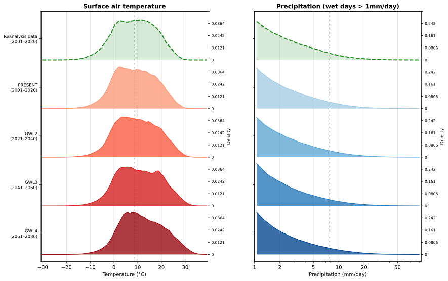
FIGURE 2.1: Domain-wide distributions of daily temperature and precipitation, for the reanalysis data and the four projection periods.
Additionally, a field with static information on the topography and the geographic location of lakes and seas was acquired from CERRA, natively available at a resolution of 5.5 km and interpolated to the target resolution of 3.4 km.
2.3.3 Modeling setup
The diffusion model technique is applied to the climate downscaling context following Watt and Mansfield (2024). The pipeline is outlined in Figure 2.2. In a first step, the original coarse 12 km climate field is linearly interpolated to a smoothed version at the target resolution. The target of the image generation task (\(\boldsymbol{x}_0\) of Section 2.2) is the residual climate field between the ground truth and the interpolated field. The contextual information \(\boldsymbol{y}\) is composed of the interpolated climate field, the static fields and the date. After its generation, the residual field is added on top of the interpolated field to retrieve the downscaled field.
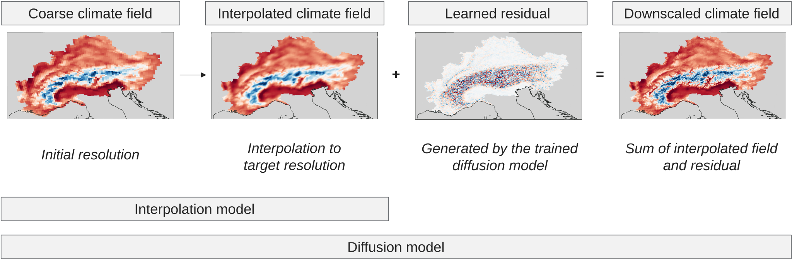
FIGURE 2.2: Residual downscaling workflow. The coarse field is linearly interpolated, the diffusion model generates the residual, and their sum yields the downscaled field.
2.3.4 Training and inference setup
The training procedure follows established approaches for diffusion-based downscaling (Watt and Mansfield 2024; Addison et al. 2026). Training pairs are constructed by coarsening the high-resolution field from the reanalysis data to the resolution of the projection data. The diffusion model’s objective is then to recover the original fine-scale field given the coarse input. The model is trained on the years 2001–2016 and validated on 2017–2018. Following training, the model is applied to the climate projection data.
This model paradigm assumes that the mapping learned between the coarse and high-resolution reanalysis fields transfers to the projection data. The distribution shift decomposes into a data-source (reanalysis to projection data) and a temporal (climate change signal) component. The data-source shift is partially addressed by the projection data being bias-corrected against the reanalysis data. Whether the diffusion model is also able to handle the temporal shift induced by climate change is assessed in Section 2.4.2.
The model was trained for a fixed budget of 20 epochs, by which point the validation loss had largely flattened. Further information on the compute time can be found in Appendix E. The reanalysis test set consists of every 7th day in the years 2019–2020, totaling 105 days. For every date an ensemble of 12 members was generated. In the projection dataset every 12th day was selected and the ensemble comprised 4 members. Both design choices were made to keep compute time reasonable.
2.3.5 Evaluation metrics
The accuracy of a generated ensemble with regard to an observation can be measured using the continuous ranked probability score (CRPS), rewarding both accuracy of the individual members and appropriate spread between them (Gneiting and Raftery 2007). For a predictive distribution \(F\), which the ensemble approximates, and a corresponding observation \(y\), it can be written as
\[ \mathrm{CRPS}(F, y) = \mathbb{E}\lvert X - y \rvert \;-\; \tfrac{1}{2}\, \mathbb{E}\lvert X - X' \rvert \]
where \(X\) and \(X'\) are independent random variables distributed according to \(F\). The first term penalizes the distance of the forecast from the observation and the second rewards spread (Gneiting and Raftery 2007). An unbiased estimator of the CRPS was applied to account for the bias introduced by the finite ensemble, following practice from other works (Mardani et al. 2025; Addison et al. 2026). For the deterministic interpolation baseline the CRPS reduces to the absolute error, so ensemble CRPS and baseline MAE are directly comparable.
Related works assess the amount of spatial variability in a field using the radially averaged power spectral density (RAPSD), which quantifies the amount of variability a field contains at each spatial scale (Addison et al. 2026; Tomasi et al. 2025). However, the RAPSD captures only the amount of the variability, not whether it is placed at the correct locations.
Following Mardani et al. (2025) and Addison et al. (2026), calibration is assessed using the spread–skill relationship, with the ensemble spread corrected for the finite ensemble size. In a calibrated ensemble, the spread of the ensemble members matches the error of the ensemble mean on average. A spread–skill ratio below one indicates an underdispersed ensemble, whose members vary less than their actual error would justify.
2.4 Results
2.4.1 Calibration assessment
Table 2.2 shows the MAE for the baseline interpolation model and the CRPS for the diffusion model for temperature and precipitation, averaged over all grid cells and selected days of the held-out test set. The diffusion model fields are closer to the ground truth than the smoothed baseline fields by a wide margin, especially for temperature. The spatial location of the error between the ensemble mean and the ground truth is visualized in Figure 2.3, which indicates that the errors are concentrated along the Alpine ridge. Appendix C gives further information on where the model applies the largest correction to the interpolated field. Figure 2.4 assesses how well the generated fields capture the spatial variability of the ground truth beyond the evaluation metrics. The generated fields for both variables carry more variance on fine scales than the interpolated field. For temperature the field carries approximately the same variance on fine scales as the ground truth. For precipitation the variance at the finest scales exceeds that of the ground truth, so the model does not merely restore the fine-scale structure that the smoothed interpolation field lacks, but overshoots it. The generated precipitation fields are therefore variance-inflated at fine scales, which is the central shortcoming of the architecture for this variable.
| Metric | Model | Temperature (°C) | Precipitation (kg/m²) |
|---|---|---|---|
| MAE | Interpolation model | 0.650 | 0.280 |
| CRPS | Diffusion model | 0.078 | 0.089 |
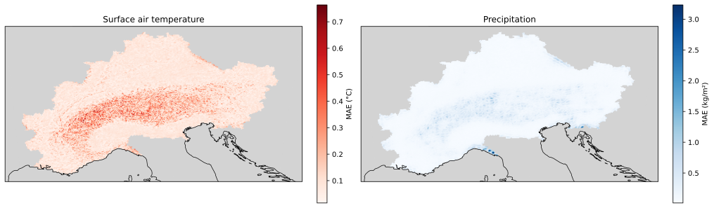
FIGURE 2.3: Mean absolute error of the ensemble mean over the Alpine domain, in °C and kg/m².
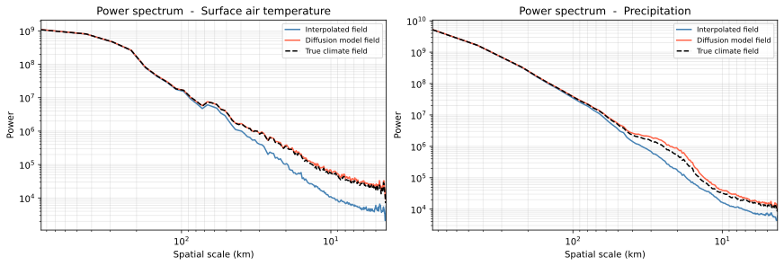
FIGURE 2.4: Radially averaged power spectral density for temperature and precipitation
Figure 2.5 addresses the calibration of the ensemble by grouping the pixels into 30 equal-count bins by ensemble spread and calculating the RMSE of the ensemble mean within each bin. The points lie below the diagonal throughout, indicating an underdispersed ensemble, with a spread–skill ratio of 0.71 for temperature and 0.52 for precipitation.
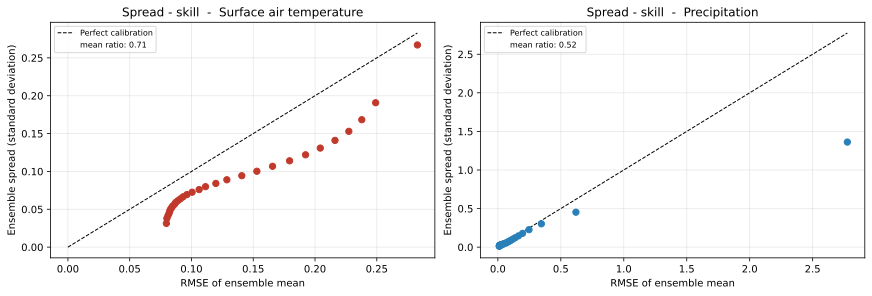
FIGURE 2.5: Spread–skill relationship of the diffusion ensemble. A calibrated ensemble follows the one-to-one line.
2.4.2 Signal preservation
For climate projection data there is no high-resolution field available against which a downscaled climate field can be validated. Therefore, the projection assessment is limited to a consistency check between the interpolated climate field and the downscaled high-resolution climate field produced by the diffusion model, indicating how the downscaling step affects the characteristics of the climate field.
Figure 2.6 compares the average temperature and precipitation mass between the interpolated climate field and the downscaled climate field. The downscaled fields are consistently about 0.02 % cooler and carry between 0.83 % and 0.88 % more precipitation mass than the interpolation reference, a difference that is approximately constant across all periods. The effect of the downscaling step therefore does not vary systematically across periods. The surplus may follow from the fine-scale variance inflation reported in Section 2.4.1.
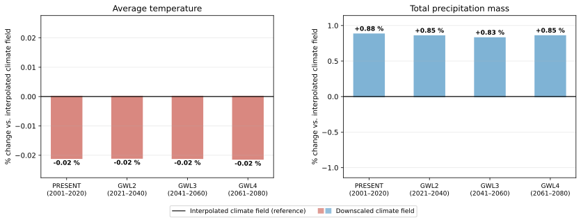
FIGURE 2.6: Effect of the downscaling step per global warming level, in percent relative to the interpolated field.
Figure 2.7 provides a spatial assessment of how the climate change signal is preserved for GWL4, the period containing the largest distributional shift from the distribution of the reanalysis dataset. The third column shows the difference between the two change signals and thus isolates any spatial reorganization introduced by the diffusion model. The figure shows that the differences are small in magnitude and show no coherent spatial structure. Averaged over the whole domain, the temperature change signal compared to the PRESENT period is essentially unaltered (below 0.01 °C in magnitude) and the precipitation change signal increases only slightly (+0.08 Gt/yr). Thus, the model transfers the change signal to the fine grid without systematically relocating it spatially.
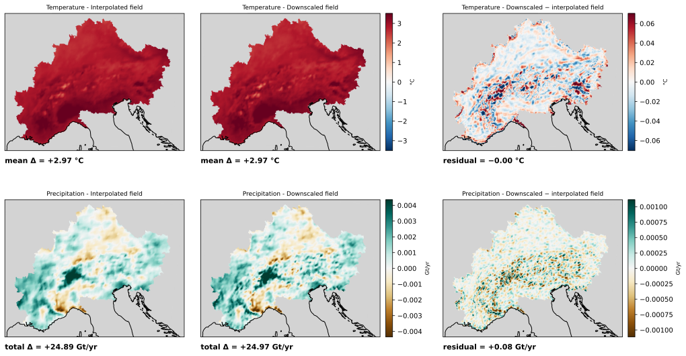
FIGURE 2.7: Spatial climate change signal at GWL4 relative to PRESENT. Rows: temperature, total precipitation mass. Columns: interpolated field, downscaled ensemble mean, their difference.
Figures 2.8 and 2.9 present the day with the highest domain-mean temperature and the day with the highest precipitation mass in the projection data. The corresponding numbers on how the statistics of the field are affected by the models are given in Table 2.3. On the hottest day the domain mean decreases only slightly from the interpolated to the downscaled field, while the maximum pixel temperature in the field increases (+1.28 °C). A more interesting pattern emerges for the day with the highest precipitation mass. While the domain mean is preserved, the maximum pixel value increases substantially relative to the interpolated field by +28.69 mm/day. The interpolation had removed part of that peak beforehand (-7.08 mm/day). Thus, part of the increase only restores the peak that the smoothing had removed. The downscaled maximum is still 11.7 % above the native 12 km maximum. This may be due to the inflated fine-scale variance reported in Section 2.4.1, which is also evident in the granular speckle that neither the coarse nor the interpolated field shows.
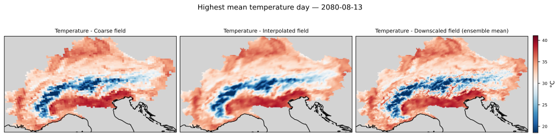
FIGURE 2.8: Day with the highest domain-mean temperature. Left to right: native 12 km grid, interpolation, downscaled ensemble mean.
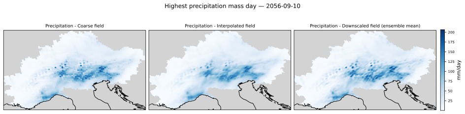
FIGURE 2.9: Day with the highest precipitation mass. Panels as in Figure 2.8.
| Native (12 km) | Interpolated | Downscaled | Interpolation | Model | |
|---|---|---|---|---|---|
| Temp: domain mean | 31.90 | 31.90 | 31.83 | 0.00 | -0.07 |
| Temp: max pixel | 39.77 | 39.79 | 41.07 | +0.02 | +1.28 |
| Prec: domain mean | 30.22 | 30.22 | 30.25 | 0.00 | +0.03 |
| Prec: max pixel | 184.90 | 177.82 | 206.51 | -7.08 | +28.69 |
A short analysis of whether the spread of the generated ensembles is affected by the distributional shift can be found in Appendix D.
2.5 Discussion
The diagnostic findings line up with previous work. Mardani et al. (2025) note that temperature downscaling is largely driven by sub-grid topography, which is learnable deterministically from static inputs. The interpolation-residual setup used in this work targets this deterministic fine-scale correction. This might explain the strong performance for temperature. In contrast, they also report for their intermittent channel (radar reflectivity) that the variance is overestimated at small scales. Mardani et al. (2025) and López-Gómez et al. (2025) both report underdispersed ensembles, while other work focusing on generating the full field instead of only the residual field reports well-calibrated spread (Aich et al. 2026; Addison et al. 2026).
The projection results are consistent with Aich et al. (2026), who find the change signal preserved under a high-emission scenario. This work shows that the downscaling step does not distort the signal it is given, either in the domain mean or spatially. The large-scale signal is, however, already present in the interpolated field to which the generated residual is added, so its preservation is partly by construction. The model learned from the reanalysis training pairs how fine-scale structure follows from a coarse field. Under warming the same coarse field may imply different fine-scale structure. Addison et al. (2026) have projection data at both resolutions and can therefore compare their downscaled change signal against a fine-scale reference. They report a bias in the magnitude of the projected change, which a consistency check of this kind would not reveal.
The work has its limitations. Due to constrained resources, the model was trained for a fixed budget without hyperparameter optimization. The orography field was only available at 5.5 km, which may explain the error concentration along the Alpine ridge reported in Section 2.4.1. The evaluation sample also limits the precision of the reported metrics. This matters most for the spread–skill relationship, where the spread is estimated from 12 ensemble members per date. Most fundamentally, no high-resolution ground truth exists for the projection period, so the fine-scale climate change signal itself cannot be validated.
2.6 Conclusion
For temperature the diffusion model approximates the ground truth better than the interpolation baseline and restores fine-scale variability, shown by the CRPS and the power spectrum. For precipitation it adds more fine-scale variability than the ground truth contains, so the fields are less realistic at the finest scales. The likely reasons are the variable’s right-skewed distribution and the fact that the coarse field and the orography do not determine its fine-scale structure. For both variables the ensemble is underdispersed.
With regard to the climate change signal, the offset relative to the interpolation baseline is constant across all periods and the spatial difference between the two change signals shows no coherent structure. Both are consistent with the change signal being transferred to the fine grid without systematic distortion.
Several directions follow from this work. Multiple options exist to improve the model’s capability in downscaling precipitation. One is to transform the variable before training, for example with a log or square-root mapping, which reduces its skew (Addison et al. 2026; Aich et al. 2026). López-Gómez et al. (2025) gave the model additional context, e.g. information on surface pressure, for downscaling precipitation. Another is to change the architecture to the regression-residual approach, so that a conditional regression first brings the coarse field to the target resolution and the diffusion model only has to handle the stochastic component (Mardani et al. 2025; Tomasi et al. 2025) or to have the model generate the full climate field (Addison et al. 2026; Aich et al. 2026). Both might also address the underdispersion, most directly full-field generation, where no interpolated baseline anchors the ensemble’s variance. Checkpoint selection could also be introduced, based on validation loss as well as accuracy of the generated ensemble on the validation set (Addison et al. 2026). Finally, a feature importance analysis on the contextual information could show how much the orography, the date and the coarse input field each contribute (López-Gómez et al. 2025).
2.6.1 Note on the dataset
The reanalysis and climate projection datasets were provided by Max Kagerbauer from the Alpine DROught Prediction (A-DROP) project. Further information on the A-DROP project can be found at the following link: https://www.alpine-space.eu/project/a-drop/
2.7 Appendix
2.7.1 Appendix A - More information on reverse diffusion process
A visualization of how the diffusion model generates images can be found below. Every fifth step was visualized. At the beginning, the estimate for the clean field does not resemble the true climate field. Thus, the image (a tensor in practice) takes only a small step in the direction of that estimated target image to reduce the noise level. With subsequent steps the estimated image starts to resemble a realistic climate field, and after 40 steps a clean image is estimated.
Figures 2.10 and 2.11 show this process for the temperature and the precipitation residual field.

FIGURE 2.10: Reverse diffusion process for the temperature residual field.
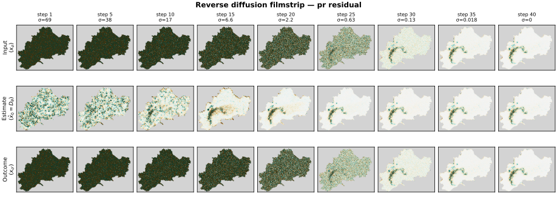
FIGURE 2.11: Reverse diffusion process for the precipitation residual field.
2.7.2 Appendix B - Distributional shift of the climate variables across global warming levels
The ridgeline visualization of Figure 2.1 is supplemented by the percentile plot in Figure 2.12, which shows how far each percentile of the domain-wide distribution moves relative to the PRESENT period. For temperature the whole distribution is shifted upwards, with the upper percentiles moving the most. For precipitation only the tail of the distribution is affected. Up to roughly the 80th percentile the values stay unchanged. From the 90th percentile they increase to about +1.4 mm/day at GWL2 and about +6 mm/day at GWL3 and GWL4. Therefore, the shift the model has to extrapolate to is concentrated in the extreme tail of the precipitation distribution.
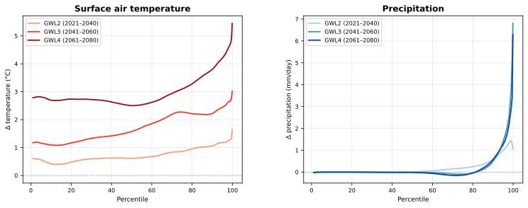
FIGURE 2.12: Distribution shift relative to PRESENT, by percentile and global warming level. The dashed line marks no change.
2.7.3 Appendix C - Mean downscaling correction
Figure 2.13 shows the correction the diffusion model applies to the interpolated field, averaged over all evaluated days. Thus, it shows where the model adds information relative to the interpolation baseline. The figure indicates that most information is added along the Alpine ridge for both variables.
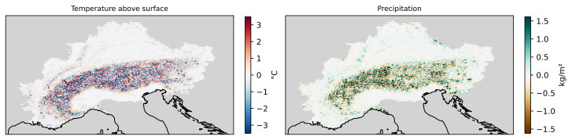
FIGURE 2.13: Mean correction added by the diffusion model to the interpolated field, averaged over the evaluated days of the reanalysis test set. Left: temperature, right: precipitation.
2.7.4 Appendix D - Ensemble spread over projection period
Figure 2.14 shows the distribution of the daily ensemble spread of the four-member ensemble over the evaluated days of each global warming level. The distributions overlap almost completely and are not ordered by warming level, so a systematic difference in the spread between the periods is not visible, although a more extensive study containing more ensemble members might give more reliable numbers.
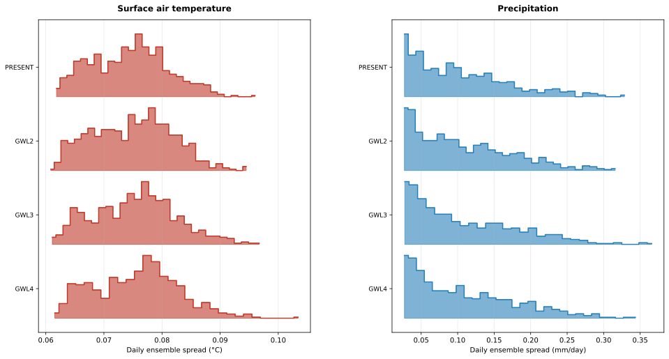
FIGURE 2.14: Daily ensemble spread of the projection ensembles, per global warming level. Each row is the histogram over the evaluated days of one period.
2.8 Usage of AI tools
I hereby declare that this seminar work was written by myself. All sources that were used directly or indirectly are acknowledged in the references. Generative AI tools were utilized as an aid for researching and understanding relevant literature and concepts, for improving spelling and grammar, and for adapting the code used for the analyses and models. Their outputs have been critically reviewed and verified by me. I take full responsibility for the content of this seminar work.